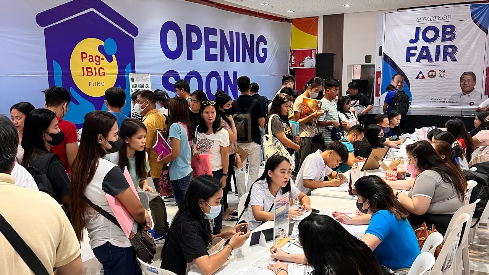
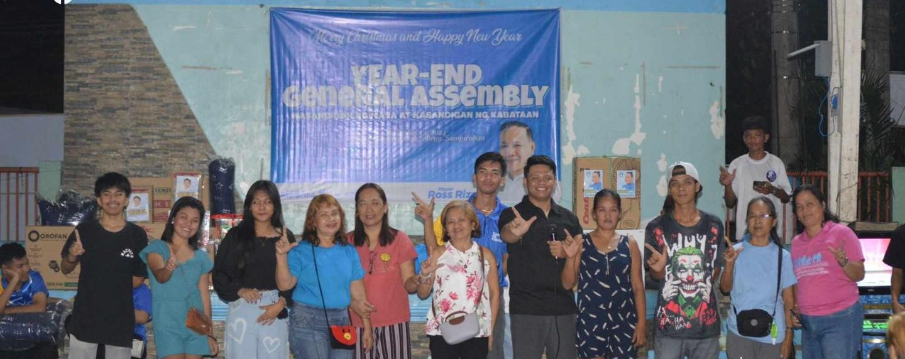

JOB OPPORTUNITIES & SEMINARS
The Job Opportunities section of Project K connects Calambeño youth and residents with the latest local job openings, internships, and seminars from government agencies, private companies, and partner organizations. It aims to support career growth, skill development, and economic participation by providing accessible employment information and guidance—all in one platform dedicated to empowering the future workforce of Calamba.

LEGAL INFORMATIONS
The Legal Information section of Project K provides access to essential laws, ordinances, and youth-related policies implemented in Calamba City. It serves as a centralized hub for understanding legal rights, community regulations, and government programs that directly impact the youth and local residents. This ensures transparency, promotes awareness, and empowers individuals to become informed and responsible citizens.

TOURISM
The Tourism section of Project K showcases the rich cultural heritage, natural wonders, and historical landmarks of Calamba City. From the iconic Rizal Shrine to scenic destinations like Mount Makiling and hot spring resorts, this section invites both locals and visitors to explore the beauty and identity of Calamba. It aims to promote pride in local heritage while boosting community engagement and tourism-driven development.
EDUCATION
SThe Education section of Project K provides essential resources and information to help students, parents, and educators navigate academic opportunities in Calamba City. It highlights local schools, scholarship programs, skills training, and youth development initiatives aimed at supporting lifelong learning. This section empowers the youth to pursue their educational goals and fosters a culture of growth, knowledge, and excellence.